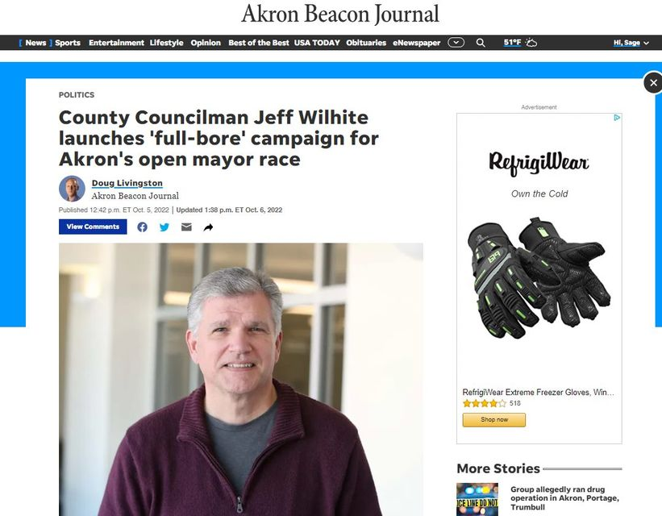

Timeline photos
Hey communists, Antifa and anarchists... I know you think you are too cool to vote. But...
this guy entered the mayoral race. He'll be on the Democratic Primary ticket in May 2023 in Akron.
If you don't vote, the people who ALWAYS vote, old white people, are going to vote for the same old white guy they always vote for.
I know you think your dumpster fires and spray paint are cool and "edgy". But REAL change happens at the voting booths.
PUT UP OR SHUT UP.